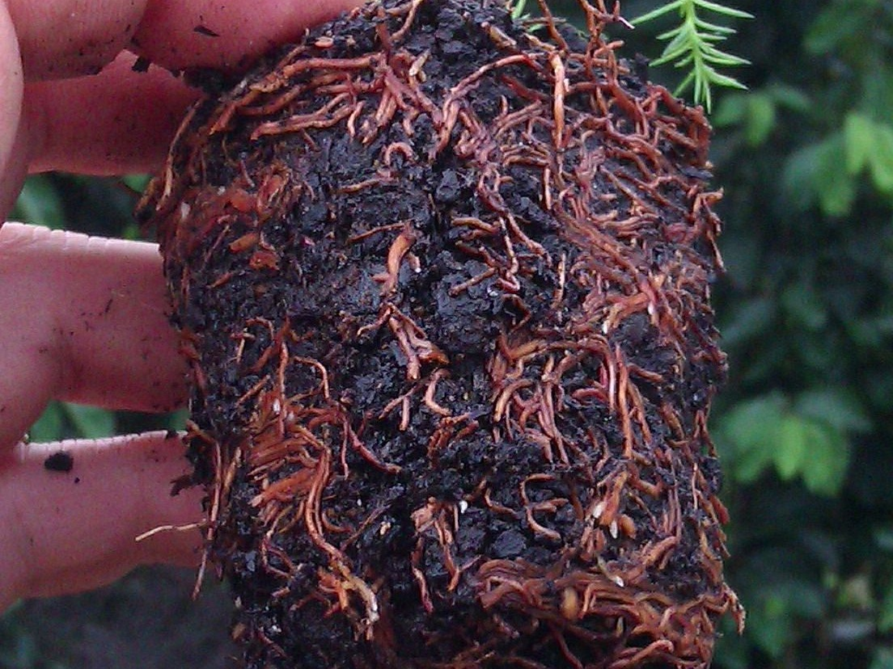
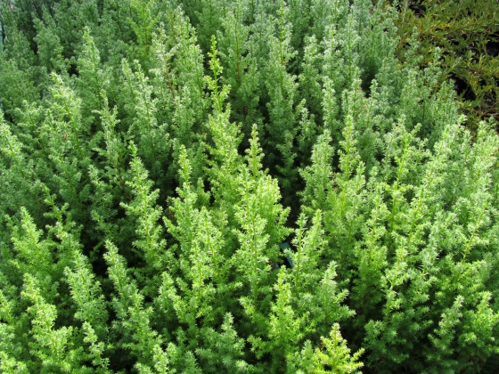
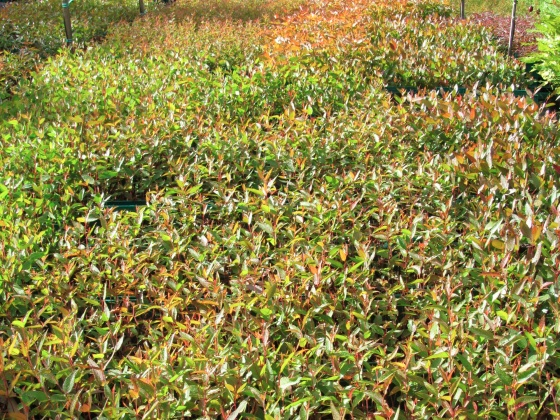

"J"
root resulting from production nursery "slit and stuff" practices when
pricking out (above left).
This distorted root system is a serious problem because it will lead to
toppling later. I utilise nursery
techniques which eliminate this problem, ensuring supply of only
highest quality containerised tree seedlings.
Side-slot containers (above right). These "air-prune" the roots so they
don't wind around the container.

Air-pruned
root system (above left). Containerised seedling showing how roots
should be (above right).
Note the strong, straight tap root and horizontal lateral roots.

Cypress
seedlings in the nursery (above left). Eucalyptus seedlings in the
nursery (above right).
Please order well in advance to guarantee supply of stock for your
planting season.
Price $110+GST per 100 plus transport. Delivery anywhere in New Zealand.
Species supplied:
Eucalyptus species: E. microcorys, E. muelleriana, E. globoidea, E. pilularis, E. sphaerocarpa
Cypress species: Cupressus lusitanica, C.
macrocarpa, Cupressus torulosa
Japanese cedar Cryptomeria japonica.